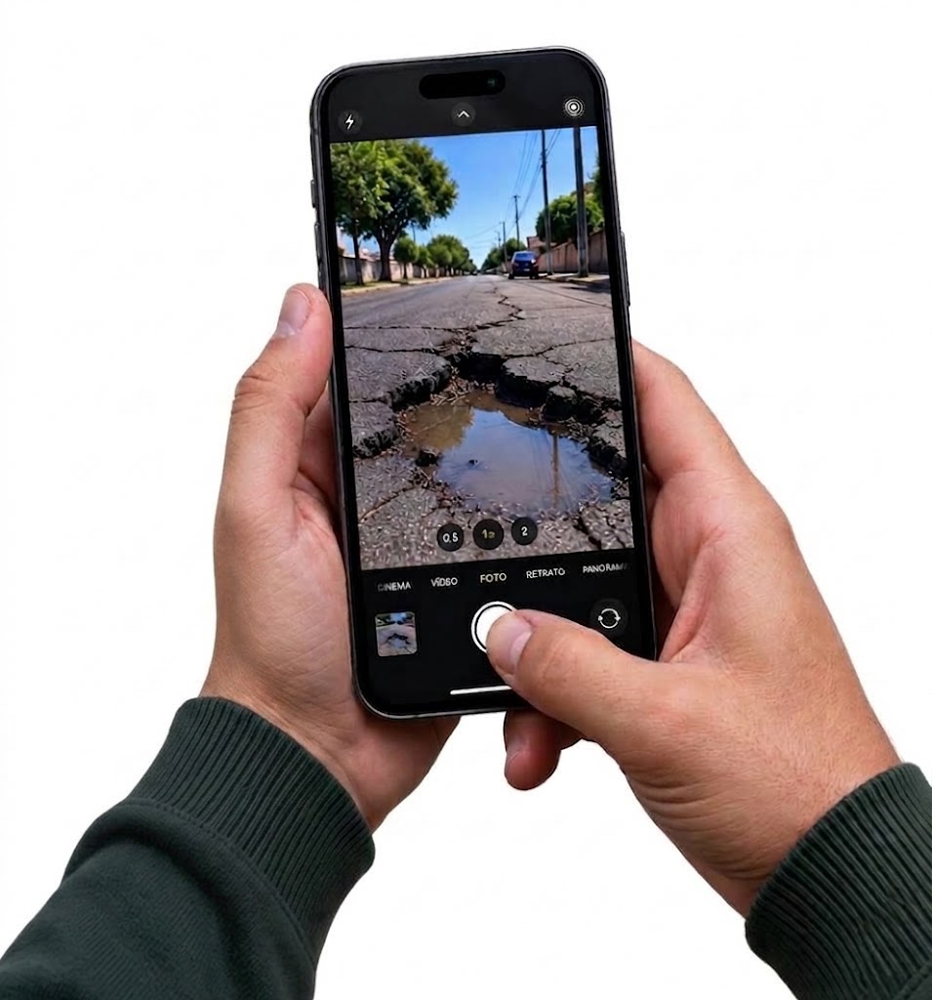

Zeladoria Urbana
MINHA
DENÚNCIA
O que você pode denunciar
Lixo e Entulho
Descarte irregular de lixo, entulho e materiais.
Iluminação Pública
Lâmpadas queimadas ou postes com problemas.
Buracos e Vias
Buracos, asfalto danificado e calçadas quebradas.
Áreas verdes
Problemas em praças, árvores, jardins e áreas de lazer.
Sobre o RelateSBC
Zelar, cuidar e
transformar
nossa cidade
dos órgãos responsáveis, tornando a comunicação
mais eficiente e as soluções mais rápidas.

Como funciona?
É simples, facil, rapido e transparente